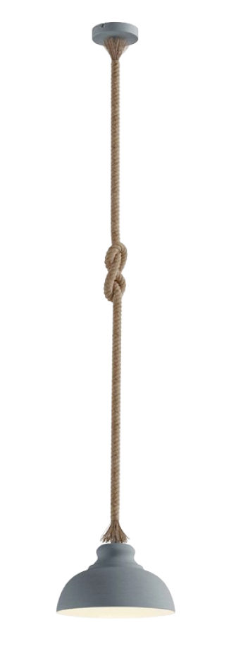
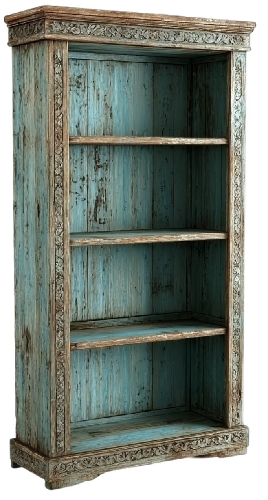
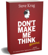
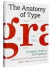
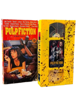
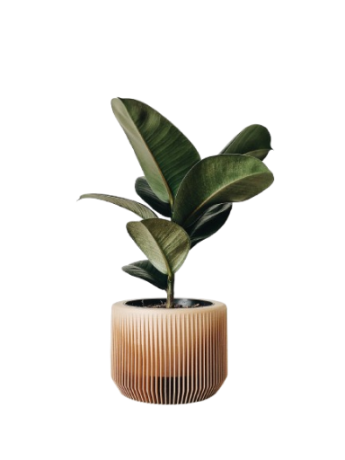
You noticed this is not moving.
It's not a bug — it's intentional.
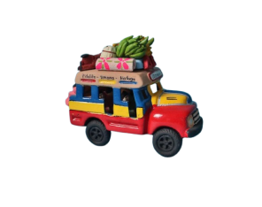
I'm from Colombia, lived 13 years in Argentina.
Based in Berlin
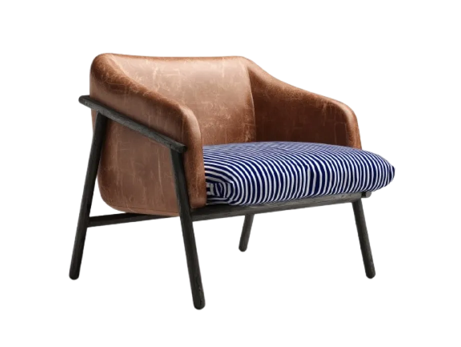
Hola! I'm Carol Munar.
I help startups and series A—D teams to establish a strong connection between their product and customers
Currently working
Designing something new called
Navigating parental benefits in Germany is hard enough when you speak the language. I'm building ElternPop for families like mine, expats trying to understand Elterngeld, Elternzeit, and Kindergeld without a German bureaucracy degree.
Recent experiences
AI-Powered Review Replies for Local Businesses
Reducing Mobile Analytics Onboarding from 3 Hours to 20 Minutes
From Quotations to Online Sales in Agribusiness
AI Body Scanner for Size Recommendations
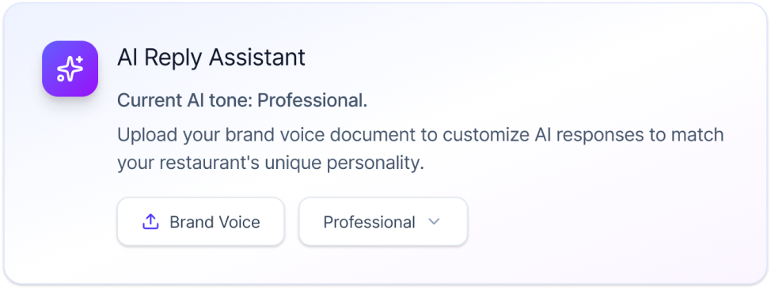
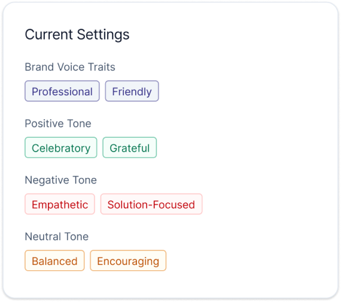

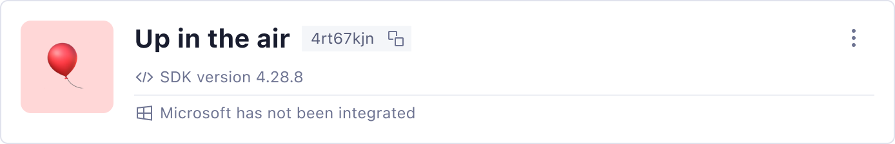
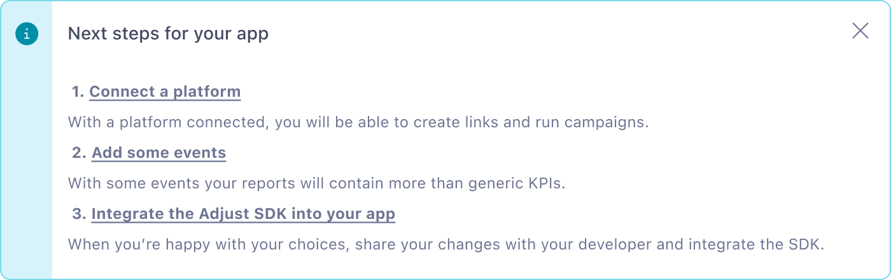
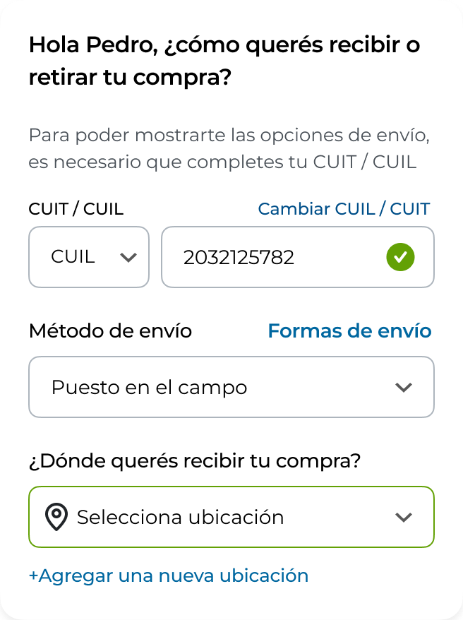
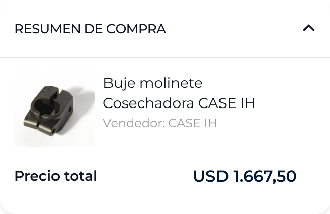
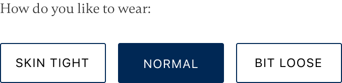
Problems I solve
Complex B2B SaaS is where I do my best work. Onboarding flows that take hours, AI features nobody knows how to design yet, workflows that make sense to engineers but nobody else. I turn that complexity into products people actually use.
How I work
I embed in cross-functional teams and build trust fast. I've worked alongside engineers, PMs, sales, and C-level stakeholders, sometimes all in the same week. I push back when needed, align when it matters, and always bring the user back into the room.
About me
Product designer based in Berlin. I focus on B2B SaaS, reducing onboarding friction, simplifying complex workflows, and shipping products from 0 to 1.
I've worked as a founding designer at early-stage startups and as part of large design organizations. I'm good at building cross-functional relationships and turning technical complexity into intuitive experiences.
Some things up there reward curiosity.